The cfiles Workspace
cfiles.dws contains a single OLEServer namespace called CFiles which implements a basic object-oriented interface to Dyalog APL component files.
This example allows an OLE Client, such as Excel, to read and write APL component files. It is deliberately over-simplified but illustrates how an object hierarchy may be implemented.
The workspace contains the function Make which converts the namespaces CFiles and CFiles.File into OLEServers and defines the COM properties for their methods. All you then have to do is to export it as a COM Server.
The CFiles OLEServer namespace contains functions GetFile and OpenFile and a sub-namespace called File which is also an OLEServer. This namespace contains functions FREAD, FREPLACE, FAPPEND and FSIZE.
The |GetFile function just returns the full pathname of the supplied samples\ole\test.dcf component file which may be used to test the OLEServer. The other functions are described in detail later in this section.
To use this Server, an OLE Client requests an instance of the dyalog.CFiles object.
To open a component file, an OLE Client calls OpenFile with the name of the file as its argument. This function opens the file and returns, not a file tie number as you might expect, but an instance of the File namespace which is associated with the file. As far as the client is concerned, this is a subsidiary OLE object of type dyalog.File.
To perform file operations, the client invokes the FREAD, FREPLACE, FAPPEND and FSIZE methods (functions) of the File object.
A more sophisticated example might expose each component as a subsidiary object too.
Registering CFiles as an OLE Server
In order to explore the use of an APL OLE Server using the cfiles workspace as an example, you must register the CFiles object on your system.
On Windows 7 or later, you must start Dyalog APL with Administrator privileges (right-click the desktop icon and choose Run as administrator). This is necessary to register an OLE server.
)LOAD the cfiles workspace from the samples\ole sub-directory
)LOAD cfiles
C:\Program Files (x86)\Dyalog\Dyalog APL 15.0 Unicode\...
To implement this workspace as an OLEServer, run "Make"
Then click File/Export from the Session menu
Make ⍝ Converts CFiles and CFiles namespaces
⍝ to OLEServers
⍝ and exports their functions as methods
⍝ then renames this ws
You are running as administrator ...
Make
Making OLEServers ...
... Done
Workspace is now mycfiles with empty ⎕LX
)OBS
CFiles
CFiles.Type
OLEServerYou should now save your workspace in a personal directory to which you have write access. This will allow you to export CFiles as either an in-process or out-of-process OLE Server.
)WSID c:\MyWS\mycfiles.dws
was mycfiles.dws
)SAVE
c:\MyWS\mycfiles.dws saved Wed Jun 1 13:53:56 2016Then select Export from the Session File menu and create either an in-process or out-of-process OLE Server.
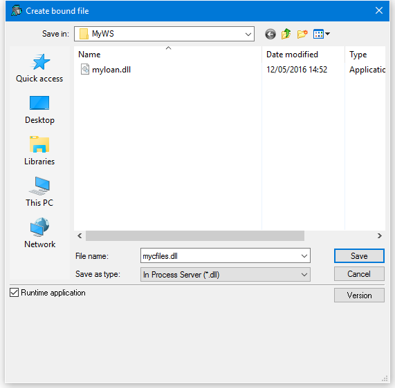
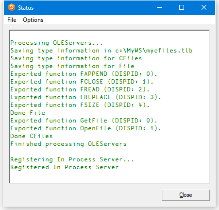
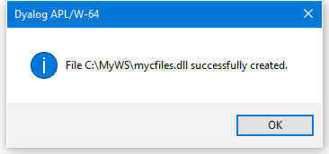
The GetFile Function
∇ r←GetFile
[1] r←2 ⎕NQ'.' 'GetEnvironment' 'DYALOG'
[2] r,←'\samples\ole\test.dcf'
∇GetFile simply returns the full pathname of the test.dcf component file.
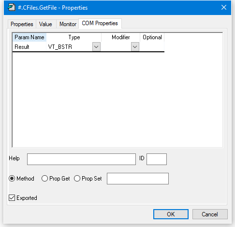
The OpenFile Function
∇ FILE←OpenFile NAME;F;TIE
[1] ⍝ Makes a new File object
[2] TIE←1+⌈/0,⎕FNUMS
[3] NAME ⎕FSTIE TIE
[4] File.TieNumber←TIE
[5] File.Name←NAME
[6] FILE←⎕OR'File'
∇OpenFile takes the name of an existing component file and opens it exclusively using ⎕FTIE.
It returns an instance of the File namespace that is associated with the file through the variable TieNumber. This is global to the File namespace.
OpenFile[4]sets the variable TieNumber in the File namespace to the tie number of the requested file.
OpenFile[5]sets the variable Name in the File namespace to the name of the requested file. This is not actually used.
OpenFile[6]creates an instance of the File namespace using ⎕OR and returns it as the result.
There is a separate instance of File for every file opened by every OLE Client that is connected. Each knows its own TieNumber and Name.
The COM Properties dialog box for OpenFile is shown below. The function is declared to take a single parameter called FileName whose data type is VT_BSTR (a string). The result of the function is of data type VT_DISPATCH. This data type is used to represent an object.
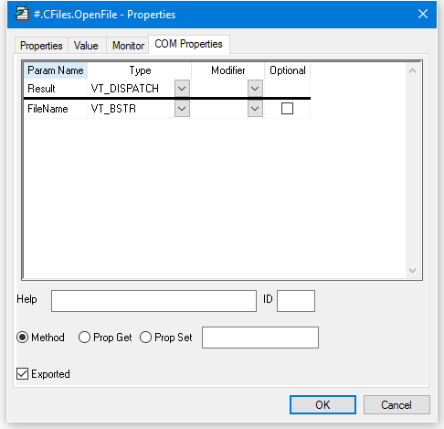
The FSIZE Function
∇ R←FSIZE
[1] R←⎕FSIZE TieNumber
∇FSIZE returns the result of ⎕FSIZE for the file associated with the current instance of the File namespace.
The COM Properties dialog box for FSIZE is shown below. The function is declared to take no parameters. The result of the function is of data type VT_VARIANT. This data type is used to represent an arbitrary APL array.
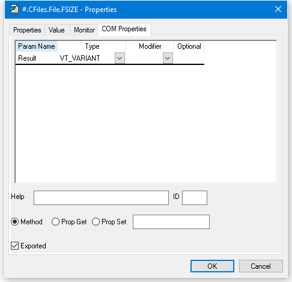
The FREAD Function
∇ R←FREAD N
[1] R←⎕FREAD TieNumber,N
∇FREAD returns the value in the specified component read from the file associated with the current instance of the File namespace.
The COM Properties dialog box for FREAD is shown below. The function is declared to take a single parameter called Component whose data type is VT_I4 (an integer). The result of the function is of data type VT_VARIANT. This data type is used to represent an arbitrary APL array.
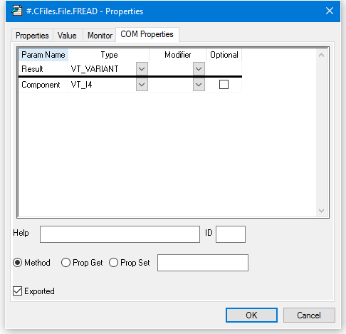
The FAPPEND Function
∇ R←FAPPEND DATA
[1] R←DATA ⎕FAPPEND TieNumber
∇FAPPEND appends a component onto of the file associated with the current instance of the File namespace.
The COM Properties dialog box for FAPPEND is shown below. The function is declared to take a single parameter called Data whose data type is VT_VARIANT. This data type is used to represent an arbitrary APL array. The result of the function is of data type VT_I4 (an integer).
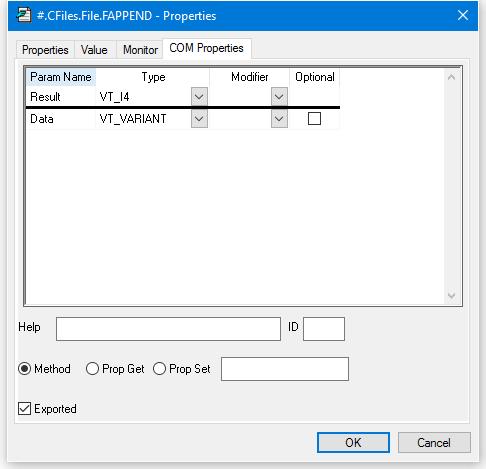
The FREPLACE Function
∇ FREPLACE ID;I;DATA
[1] I DATA←ID
[2] DATA ⎕FREPLACE TieNumber,I
∇FREPLACE replaces the specified component of the file associated with the current instance of the File namespace.
The COM Properties dialog box for FREPLACE is shown below. The function is declared to take two parameters. The first is called Component and is of data type VT_I4 (integer). The second parameter is called Data and is of data type VT_VARIANT. This data type is used to represent an arbitrary APL array. The result of the function is of data type VT_VOID, which means that the function does not return a result.
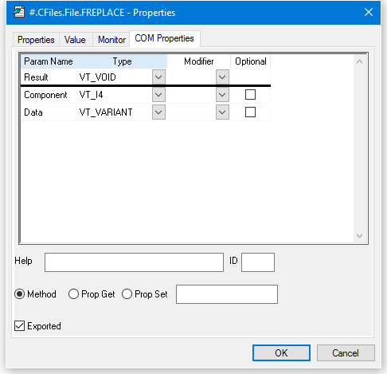
Using CFiles from Excel
Start Excel and load the spreadsheet cfiles.xlsm from the Dyalog APL sub-directory samples\ole.
To simplify the Excel code, only components containing matrices (such as those contained in samples\ole\test.dcf) are handled. Components containing scalars, vectors, higher-rank arrays, and complex nested arrays are not supported.
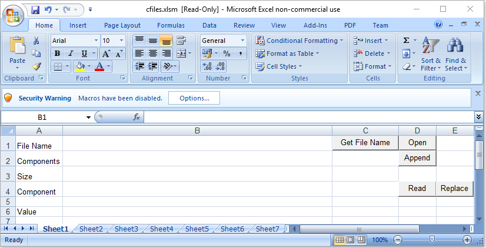
Depending upon your configuration settings, it is likely that the macros in cfiles.xlsm are disabled when the spreadsheet is loaded, as shown above. If so, click the Options button and enable them. The security warning is then removed as shown below.
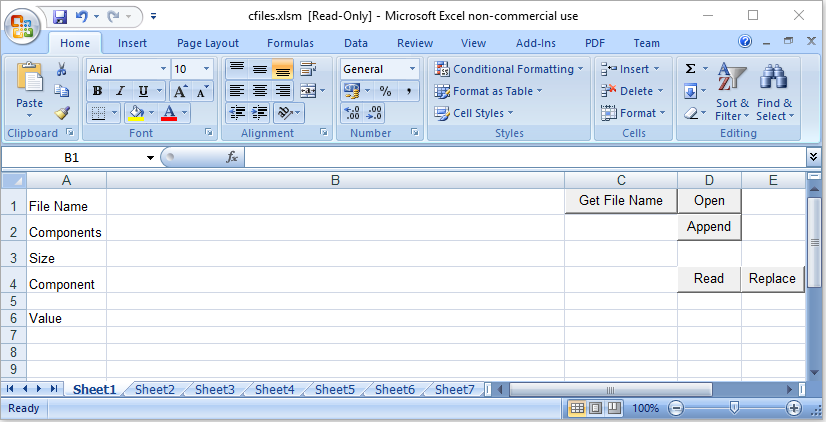
The next step is to enter the name of your component file. A sample file named test.dcf is provided in the samples\ole sub-directory. To get the pathname of this sample file, click Get File Name. The result is shown below:
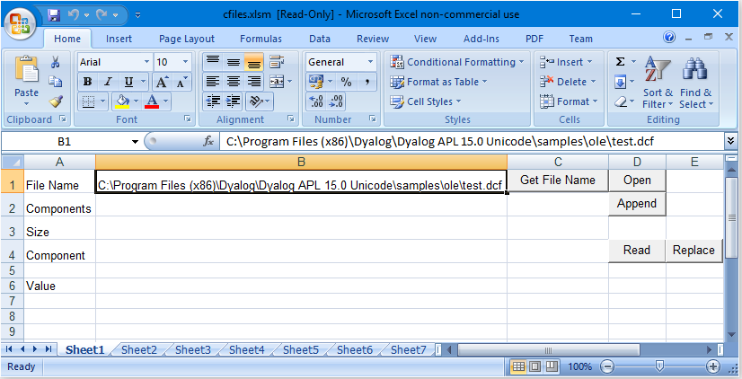
The next step is to open the file by clicking the Open button. This runs the FOpen procedure. This step is critical; otherwise any attempt to read or write to the file will fail. When the file is opened, the size of the file is displayed as shown below.
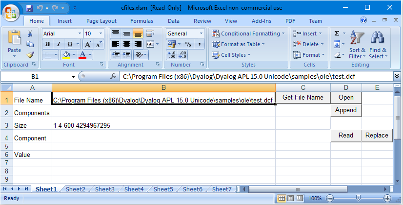
Finally, to read a component, enter the component number, move the input focus to a different cell, and then and click Read. This runs the FRead procedure.
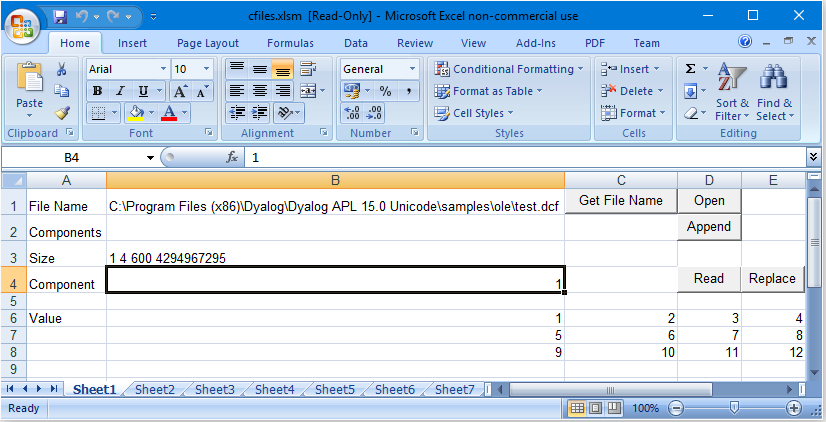
To replace a component, first enter the component number. Then type some data elsewhere on the spreadsheet and select it. Now click Replace. This runs the FReplace procedure.
To append a component, enter some data elsewhere on the spreadsheet and select it. Now click Append. This runs the FAppend procedure.
The FOpen Procedure
Public CF As Object
Public File As Object
Dim Data As Variant
Sub FOpen()
Set CF = CreateObject("dyalog.cfiles")
f = Cells(1, 2).Value
Set File = CF.OpenFile(f)
Call FSize
End SubIn the declaration section, the first statement declares a global variable CF to be of data type Object. This variable will be connected to the dyalog.CFiles OLE Server object. The second statement declares a global variable File to be of data type Object. This variable will be connected to the dyalog.File OLE Server object. The third statement declares a global variable Data to be of data type Variant. This is equivalent to a nested array. This variable will be used for the component data.
The statement:
Set CF = CreateObject("dyalog.cfiles")causes OLE to start Dyalog APL and obtain an instance of the dyalog.CFiles OLE Server object which is then associated with the variable CF. Because this variable is global, the OLE Server remains in memory and available for use.
The statement
f = Cells(1, 2).Valuegets the name of the file to be opened and puts it into the (local) variable f.
Finally, the statement:
Set File = CF.OpenFile(f)calls the OpenFile function and stores the result (which is an object) in the global variable File.
The FRead Procedure
Sub FRead()
c = Cells(4, 2).Value
Data = File.FREAD(c)
For r = 0 To UBound(Data, 1)
For c = 0 To UBound(Data, 2)
Cells(r + 6, c + 2).Value = Data(r, c)
Next c
Next r
End Sub The statement:
c = Cells(4, 2).Valuegets the number of the component to be read and stores it in the (local) variable c.
The statement:
Data = File.FREAD(c)calls the FREAD function in the instance of the File namespace that is connected to the (global) Excel variable File. The result is stored in the variable Data.
The remaining statements copy the data from Data into the spreadsheet.
The FReplace Procedure
Sub FReplace()
c = Cells(4, 2).Value
Data = Selection.Value
Call File.FReplace(c, Data)
Call Fsize()
End SubThe statement:
c = Cells(4, 2).Valuegets the number of the component to be replaced and stores it in the (local) variable c.
The statement:
Data = Selection.Valuegets the contents of the selected range of cells and stores it in the variable Data. This will be a 2-dimensional matrix.
The statement:
Call File.FReplace(c, Data)calls the FREPLACE function in the instance of the File namespace that is connected to the (global) Excel variable File.
The FAppend Procedure
Sub FAppend()
Dim Rslt As Variant
Data = Selection.Value
Rslt = File.FAppend(Data)
Call Fsize()
End SubThe statement:
Data = Selection.Valuegets the contents of the selected range of cells and stores it in the variable Data. This will be a 2-dimensional matrix.
The statement:
Rslt = File.FAppend(Data)calls the FAPPEND function in the instance of the File namespace that is connected to the (global) Excel variable File. The result of this function is ignored.